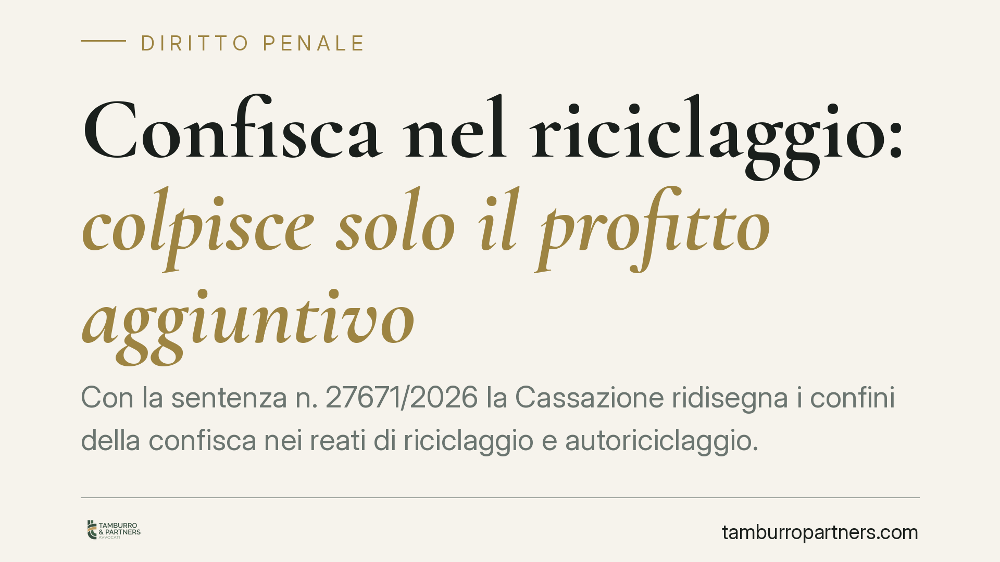

Confisca nel riciclaggio: colpisce solo il profitto aggiuntivo
Con la sentenza n. 27671/2026 la Cassazione ridisegna i confini della confisca nei reati di riciclaggio e autoriciclaggio. Il denaro complessivamente movimentato non è tutto aggredibile: la confisca diretta del profitto può colpire solo il vantaggio patrimoniale aggiuntivo realmente conseguito dal riciclatore. Una distinzione che incide su indagini, sequestri e strategie difensive.

Il caso deciso dalla Cassazione
La Terza Sezione Penale è intervenuta su una vicenda che vedeva coinvolte una società per azioni e alcune società cd. "cartiere", ossia entità prive di reale operatività, utilizzate per far transitare somme di provenienza illecita. La Procura aveva ottenuto dal Tribunale del Riesame la conferma di un sequestro finalizzato alla confisca dell'intero importo movimentato attraverso i canali di ripulitura.
La Corte ha censurato questa impostazione. Il denaro complessivamente riciclato non coincide con il profitto del reato di riciclaggio: gran parte di quelle somme resta profitto del reato presupposto, cioè del delitto che ha originariamente generato la ricchezza illecita.
Inquadramento normativo
I reati in gioco sono il riciclaggio (art. 648-bis c.p.) e l'autoriciclaggio (art. 648-ter.1 c.p.). Il primo punisce chi sostituisce, trasferisce o compie operazioni su denaro o beni di provenienza delittuosa, ostacolandone l'identificazione dell'origine. Il secondo colpisce lo stesso comportamento quando è realizzato dall'autore del reato presupposto.
La confisca diretta ha per oggetto il profitto del reato: il vantaggio economico che deriva in via immediata dalla condotta illecita. Nel riciclaggio il punto critico è proprio individuare *quale* vantaggio nasca dall'attività di ripulitura, distinguendolo dalla ricchezza già acquisita con il reato a monte.
La Cassazione fissa il criterio: nel riciclaggio e nell'autoriciclaggio il profitto confiscabile in via diretta è il solo vantaggio patrimoniale aggiuntivo effettivamente conseguito dal riciclatore. È, in sostanza, il guadagno che la condotta di ripulitura produce in più rispetto al capitale illecito già esistente: ad esempio compensi, provvigioni, incrementi di valore. Il capitale ripulito, invece, resta profitto del reato presupposto e va aggredito con gli strumenti relativi a quel reato.
Cosa cambia in concreto
La pronuncia ha ricadute significative sull'ampiezza dei sequestri. Fino ad oggi non era raro che l'accusa quantificasse il profitto del riciclaggio sull'intera massa transitata, con misure cautelari molto estese. La Corte impone ora un calcolo più selettivo.
Per chi è indagato o imputato, questo significa che una parte del sequestro può risultare sproporzionata rispetto al reale profitto contestabile a titolo di riciclaggio. Attenzione però: il denaro non diventa intoccabile. Resta pienamente aggredibile come profitto del reato presupposto, ma seguendo il corretto titolo giuridico e nei confronti dei soggetti effettivamente responsabili di quel reato.
La distinzione conta anche sul piano della difesa. Sommare due volte lo stesso valore — una come profitto del presupposto e una come profitto del riciclaggio — determinerebbe una duplicazione della confisca, non consentita. Contestare la corretta imputazione del profitto diventa quindi un profilo tecnico centrale nei giudizi cautelari e di merito.
Per le persone giuridiche il tema si collega alla responsabilità da reato degli enti: la quantificazione del profitto confiscabile incide sulla misura patrimoniale applicabile alla società.
Cosa fare in concreto
- Verificare la base di calcolo del sequestro. Controllare se l'importo colpito corrisponde al vantaggio aggiuntivo del riciclaggio o comprende, indebitamente, l'intero capitale ripulito.
- Distinguere i titoli. Ricostruire con precisione cosa sia profitto del reato presupposto e cosa profitto del riciclaggio, per contestare eventuali duplicazioni.
- Documentare i flussi. Raccogliere la tracciabilità delle operazioni, i contratti e le voci di ricavo per dimostrare l'entità effettiva del guadagno derivato dalla condotta contestata.
- Attivarsi in sede di riesame. Portare i profili di sproporzione davanti al Tribunale del Riesame nei termini, senza attendere il giudizio di merito.
- Coordinare la difesa dell'ente. Se coinvolta una società, allineare la strategia sulla confisca con la posizione delle persone fisiche indagate.
La sentenza non riduce la pericolosità dell'accusa di riciclaggio, ma richiede rigore nella quantificazione delle misure patrimoniali. Un errore di perimetro, oggi, è un argomento difensivo utilizzabile.
---
*Contributo informativo a cura di Tamburro & Partners - Avv. Giuseppe Tamburro. Non costituisce parere legale.*
Ogni condominio ha una storia a sé.
Se gestisci un'amministrazione e vuoi un confronto su una specifica questione condominiale, scrivi allo studio. Ti rispondiamo entro un giorno lavorativo.